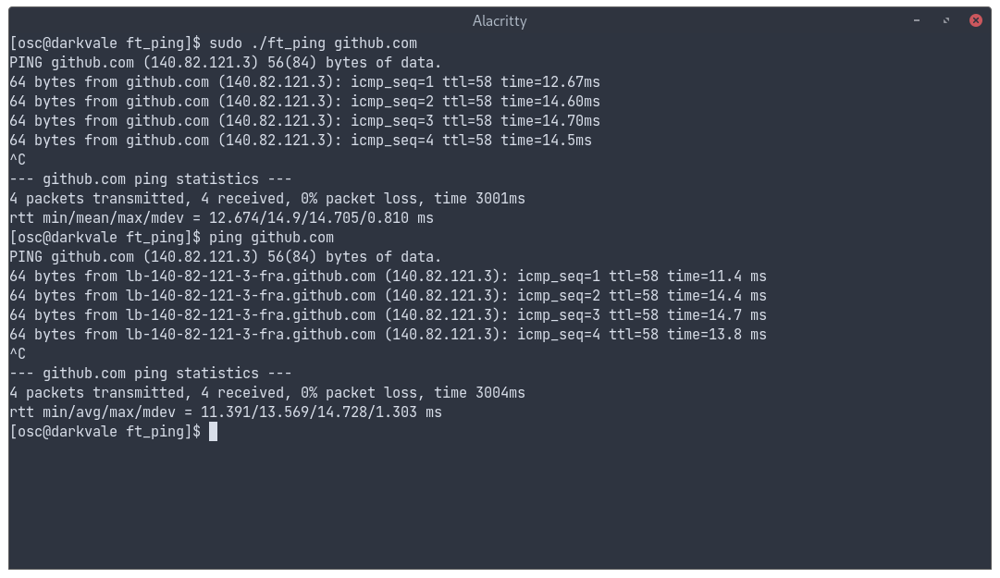

Echange de paquets en réseau.
Ping est une commande permettant de mesurer la qualité d'une communication en réseau, ainsi que ses caractéristiques. Le but du projet était de reproduire les fonctionnalités essentielles du programme. Dans l'exemple ci-dessous, on a lancé successivement notre programme et l'implémentation officielle de linux. On voit que les temps de réponse observés sont similaires.
Ce projet est une bonne introduction aux concepts de la programmation en réseau car il requiert d'apprendre à formater, lire et recevoir des paquets de données en bas niveau, ainsi que les normes qui régissent les échanges entre machines distantes.